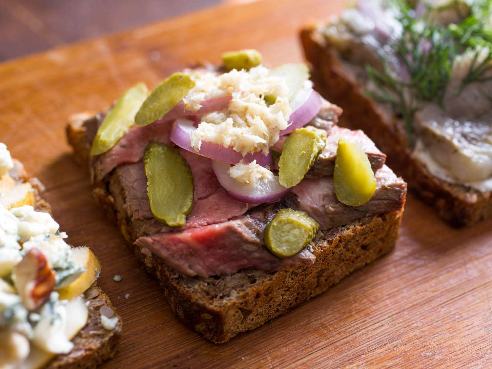
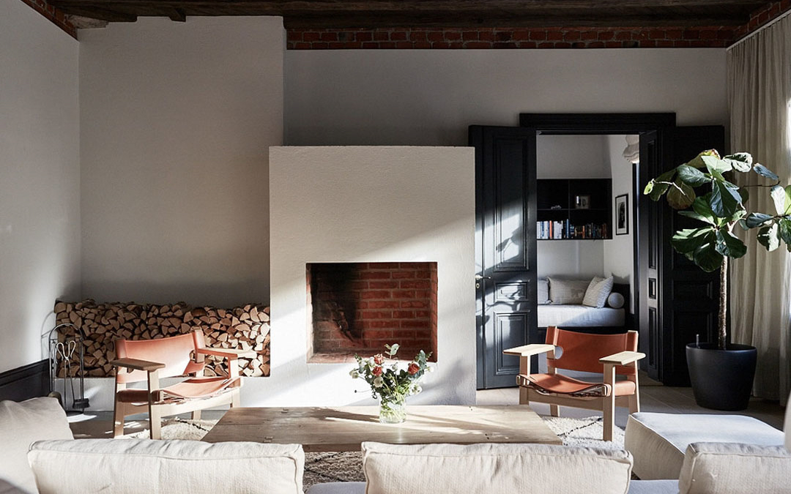
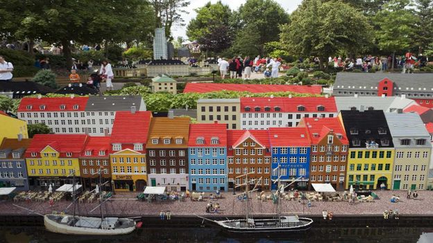
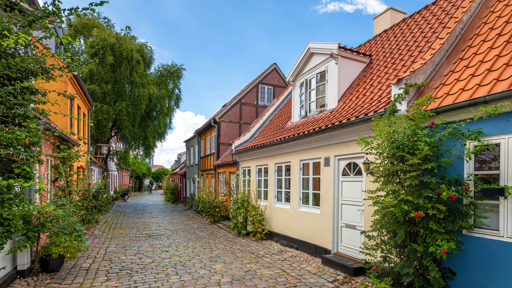
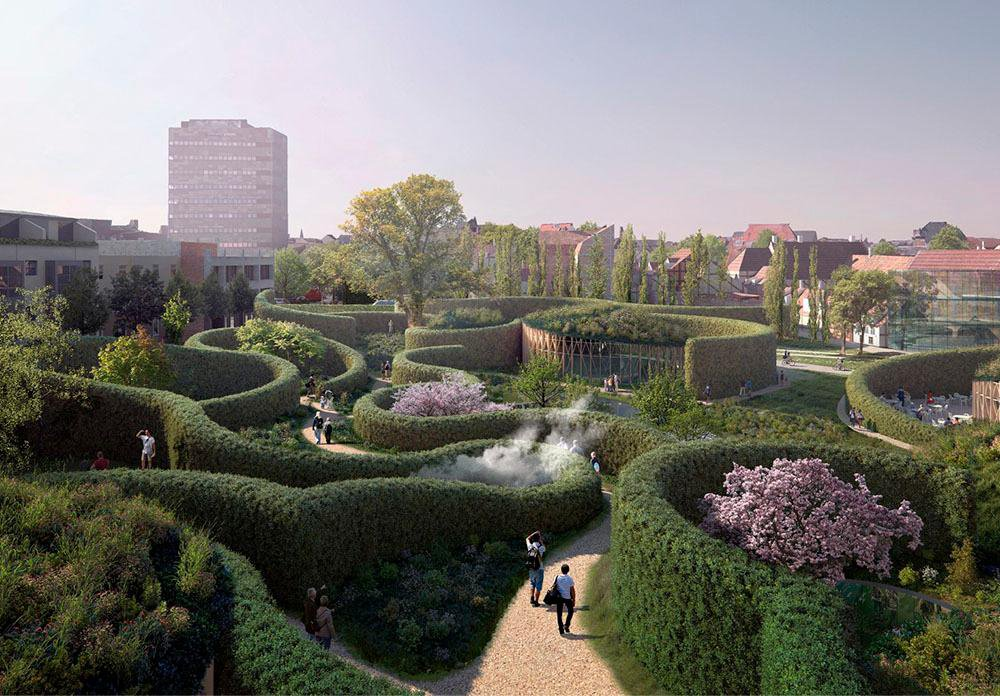
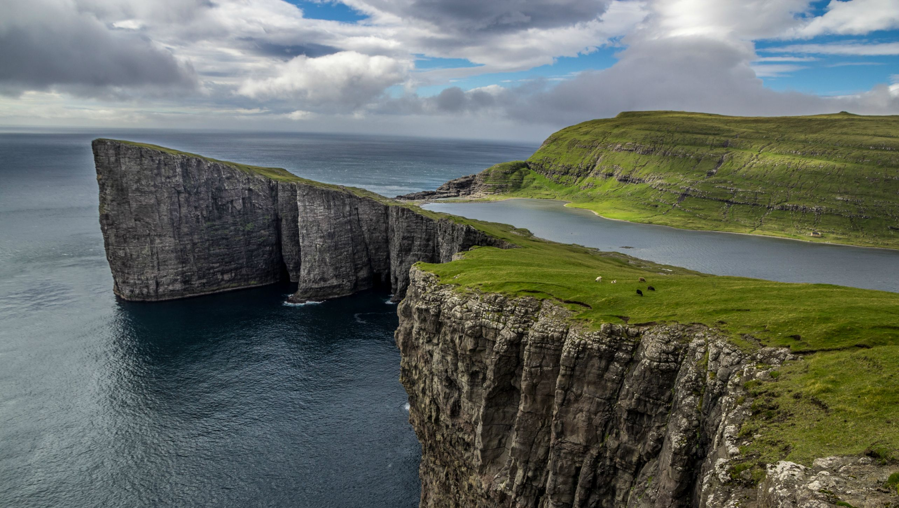
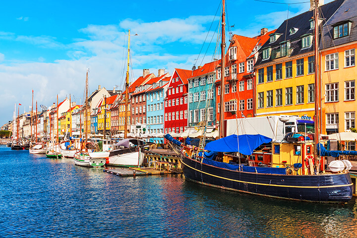

Food
- Æbelskiver
- Known as a dessert in Denmark while in the USA we have it for breakfast.
- Usually puts jam and powdered sugar on top.
- Traditionally make it on Christmas morning.
- Stegt flæsk med persillesovs
- Flæskesteg
- Smørrebrød
- Kanelsnegle
- Lakrids
- Kartofler
- Chokolade
*The italicized font is descending in correspondance to picture.*

Culture
- High-quality design and architecture.
- Hygge--a snug convival wintery feeling.
- One of the happiest countries in the world.
- Lego was invented by a Dane.


Places
- Aarhus City
- Gásadalur Village, Vágar, Faroe Islands
- Grenen, Skagen
- Hans Christian Andersen Museum, Odense
- Møns Klint, Moen
- Sørvágsvatn Lake, Faroe Islands
- Råbjerg Mile
- King's Garden, Copenhagen
- Frederiksborg Palace, Hillerød
- Nyhavn, Copenhagen
- Kronborg Slot, Helsingør
- Christiansborg Palace, Copenhagen
- Tivoli Gardens, Copenhagen
- Ribe, Jutland
*The italicized font is descending in correspondance to picture.*




Danish Food: What to Eat in Denmark
Interactive World Population Tableau Chart

Go to Top